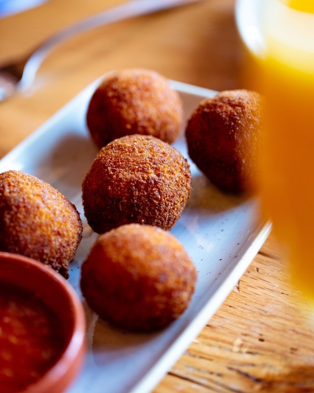

How to prepare Arancini
Lets start

Instructions
- For the rice:
- 500 g Arborio or Carnaroli rice
- 1.2 L vegetable or meat broth (or water + bouillon)
- 1 sachet saffron
- 50 g grated Parmigiano or Pecorino cheese
- 30 gr of butter
- Salt to taste
- For the filling (ragù):
- 200 g ground beef or mixed beef/pork
- 1 small onion, finely chopped
- 50 ml dry white wine
- 200 g tomato puree (passata)
- 100 g peas (fresh or frozen)
- For coating & frying:
- 2–3 eggs, beaten
- All-purpose flour
- Breadcrumbs
- Sunflower or peanut oil for deep frying
Instructions:
- Cook the rice
- Bring broth to a boil, add saffron and rice.
-
Cook until all liquid is absorbed — the rice should be firm, not
mushy.
- Stir in butter and cheese, adjust salt.
-
Spread on a tray to cool completely (best chilled in the fridge).
- Make the ragù filling
- Sauté chopped onion in olive oil until soft.
- Add minced meat, brown well.
- Add wine and let evaporate.
- Stir in tomato passata, season with salt and pepper.
-
Simmer until thickened (20–30 min). Add peas near the end. Cool.
- Form the arancini
-
Wet your hands with water. Take a handful of rice and flatten it into
your palm.
-
Place a spoonful of ragù (and optional mozzarella) in the center.
- Add more rice on top and shape into a ball or cone.
- Repeat with the rest.
- Bread and fry
- Roll each ball in flour, then beaten egg, then breadcrumbs.
- Deep-fry in hot oil (170–180°C) until golden and crispy.
- Drain on paper towels and serve warm.
Go to Home